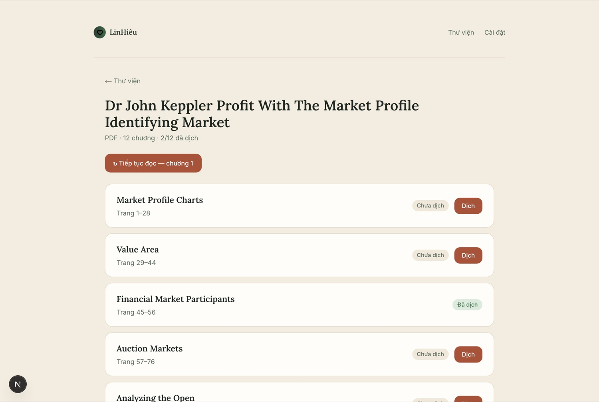
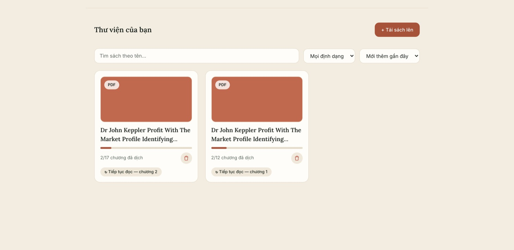
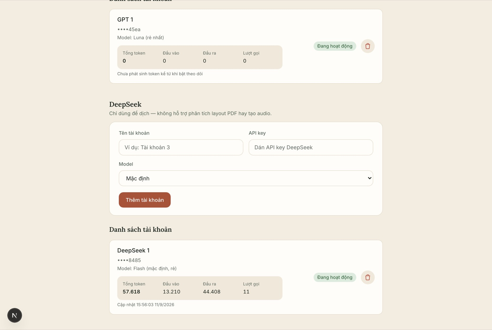
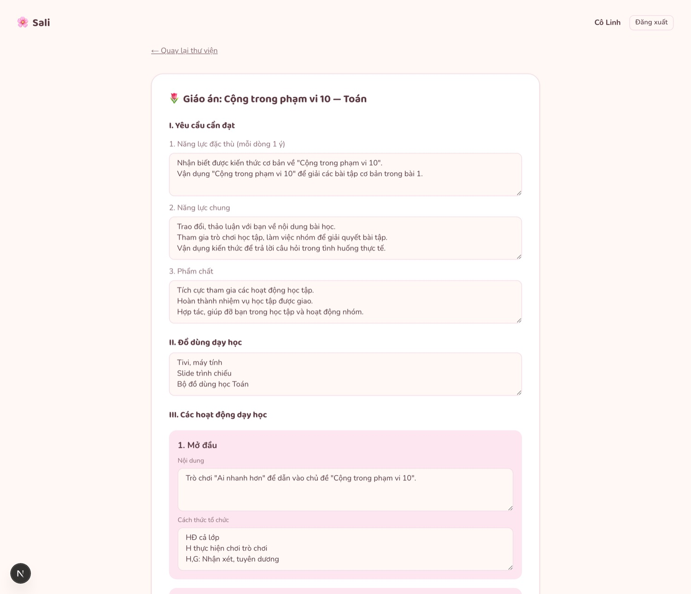
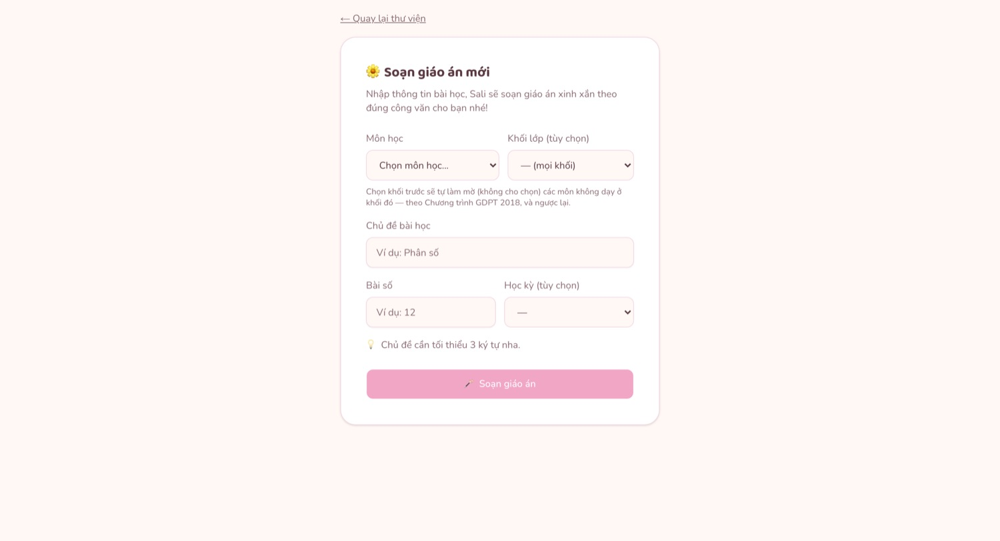
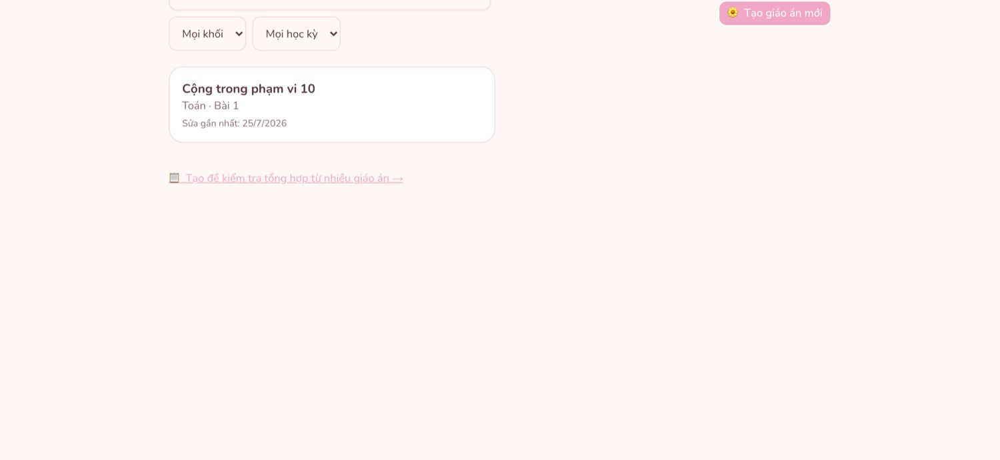

Ba năm rưỡi làm nghề phân tích nghiệp vụ — và hai sản phẩm tự dựng bằng AI, đang chạy thật với dữ liệu thật.
Three and a half years in business analysis — and two products I built with AI, running today on real data.
Phân tích & đặc tả yêu cầuRequirement analysisMô hình hoá quy trìnhProcess modellingTự dựng sản phẩm bằng AIBuilds products with AIEdTech · Y tế · AI Agent · VREdTech · Health · AI Agent · VR
Tôi là Business Analyst phụ trách trọn vòng đời yêu cầu nghiệp vụ — thu thập, đặc tả, phối hợp phát triển, nghiệm thu — cho các sản phẩm EdTech, y tế, chatbot AI, AI Agent và VR tại thị trường Việt Nam và châu Phi. Điểm khác biệt của tôi là không dừng ở tài liệu: hai sản phẩm trong hồ sơ này do tôi tự đặc tả rồi tự dựng bằng AI.
I am a Business Analyst covering the full requirement lifecycle — elicitation, specification, delivery support, acceptance — across EdTech, healthcare, AI chatbot, AI Agent and VR products in the Vietnamese and African markets. What sets me apart is that I don't stop at documents: both products in this portfolio were specified and then built by me with AI.
3,5năm kinh nghiệm BA, thêm 1,5 năm kiểm thử phần mềmyears as a BA, plus 1.5 years in software testing
30+quy trình BA ứng dụng AI tự thiết kế tại LumusAI, rút ~70% thời gian xử lýAI-assisted BA workflows designed at LumusAI, cutting ~70% of handling time
3 năm3 yrshợp đồng sử dụng nền tảng C2P — bàn giao đúng hạn, khách phản hồi tích cựcusage contract on the C2P platform — delivered on time, positive client feedback
2sản phẩm cá nhân đi từ ý tưởng đến ứng dụng chạy đượcpersonal products taken from idea to a working application
02
LinHiêu — ứng dụng dịch sách và đọc thành tiếng
LinHiêu — book translator and audio reader
Sản phẩm đang chạyLive product
Bài toánThe problem
Đọc 3–4 cuốn sách ngoại văn mỗi tuần mà không phải dịch thủ công
Reading 3–4 foreign-language books a week without translating by hand
Dịch máy từng đoạn thì mất mạch đọc; dịch cả cuốn thì tốn tiền cho phần không đọc tới; và hạn mức tài khoản AI luôn hết giữa chừng. Tôi đặc tả sản phẩm quanh đúng ba ràng buộc đó: dịch theo chương khi cần, lưu lại vĩnh viễn để không gọi lại API, và tự đổi tài khoản khi hết hạn mức.
Translating passage by passage breaks the reading flow; translating a whole book pays for pages never read; and AI account quotas always run out mid-way. I specified the product around exactly those three constraints: translate per chapter, on demand, cache permanently so the API is never called twice, and switch accounts automatically when quota runs out.
Vai tròRoleBA · PO · tự buildBA · PO · self-built
Đầu vàoInputEPUB · PDF · DOCX
Nhà cung cấp AIAI providersGemini · OpenAI · DeepSeek
01 · Màn hình đọcBản gốc và bản dịch xen kẽ từng đoạn để đối chiếu, giữ nguyên mốc trang của sách gốc. Nút “Nghe” đọc thành tiếng chương đã dịch.Source and translation interleaved paragraph by paragraph, original page markers preserved. “Nghe” reads the translated chapter aloud.

02 · Danh sách chương17 chương tách tự động từ một file PDF, kèm khoảng trang chính xác và trạng thái từng chương — dịch tới đâu tính tiền tới đó.17 chapters split automatically from one PDF, each with its exact page range and status — you only pay for what you read.

03 · Thư việnTiến độ “2/17 chương đã dịch” và lối tắt “Tiếp tục đọc” đưa người dùng về đúng chương đang dở.A “2 of 17 chapters translated” progress bar and a “continue reading” shortcut back to the exact chapter in progress.

04 · Theo dõi hạn mứcMỗi tài khoản hiển thị tổng token, token đầu vào / đầu ra và số lượt gọi — số liệu thật từ máy tôi, để biết chi phí đang rơi vào đâu.Each account shows total, input and output tokens plus call count — real figures from my own machine, so cost is always attributable.
Tôi làm gì trong dự án này
What I did on this project
Brainstorm và chốt phạm vi: viết rõ điều sản phẩm không làm (không đa người dùng, không chọn ngôn ngữ đích, không ghép file audio) để giữ bản MVP đủ nhỏ mà vẫn dùng được.
Brainstorm and scoping: wrote down explicitly what the product would not do (no multi-user, no target-language picker, no audio merging) to keep the MVP small but usable.
Viết tài liệu thiết kế: kiến trúc, luồng dữ liệu một phiên đọc, 4 tình huống lỗi và cách xử lý riêng từng loại, phạm vi kiểm thử.
Design document: architecture, the data flow of one reading session, four error cases with a distinct response for each, and test scope.
Lập kế hoạch triển khai chia thành các nhiệm vụ có thứ tự, mỗi nhiệm vụ nêu rõ file đụng tới và cách nghiệm thu.
Implementation plan broken into ordered tasks, each naming the files it touches and how it is verified.
Tự build bằng AI và tự kiểm thử: 56 lần thay đổi có kiểm soát, phần lớn là sửa lỗi biên tôi tự tìm ra — ví dụ một file hỏng làm mất cả thư viện, hay hai tiến trình ghi đè trạng thái chương của nhau.
Built it with AI and tested it: 56 controlled changes, mostly edge-case fixes I found myself — a single corrupt file taking down the whole library, or two processes overwriting each other's chapter status.
03
Tư duy logic: quy trình đọc PDF leo thang chi phí
Analytical reasoning: the cost-escalating PDF pipeline
Phần lõiCore
Một file PDF không nói cho ta biết nó có bao nhiêu chương. Có cuốn nhà xuất bản đã ghi sẵn mục lục điện tử, có cuốn chỉ là ảnh chụp trang giấy. Nếu lúc nào cũng nhờ AI đọc cả cuốn thì chắc chắn ra kết quả, nhưng tốn tiền cho cả phần sách đã tự nói rõ cấu trúc. Tôi thiết kế quy trình 5 tầng, tầng sau chỉ chạy khi tầng trước rẻ hơn không trả lời được.
A PDF does not tell you how many chapters it has. Some carry a publisher-authored digital outline; some are just photographs of paper. Asking AI to read every book end to end always works, but pays for structure the book already states for free. So I designed a five-stage pipeline where each stage runs only when the cheaper one before it could not answer.
Chi phíCostTăng dầnIncreasing
0
Sàng lọc từng trang
Per-page triage
Quét cả cuốn tại chỗ, xếp mỗi trang vào một trong ba nhóm: đọc sạch, chữ lỗi font, hoặc trang trống vì là ảnh chụp.
Scans the whole document locally and sorts every page into one of three groups: clean, garbled glyphs, or empty because it is a scan.
Miễn phí · tại chỗFree · local
1
Nhờ AI đọc lại ảnh
AI transcription
Chỉ gửi đúng những trang tầng 0 đã đánh dấu là lỗi hoặc trống — không gửi cả cuốn.
Sends only the pages stage 0 flagged as garbled or empty — never the whole book.
Gọi AI · phạm vi hẹpAI call · narrow
2
Gom ứng viên tiêu đề
Heading candidates
Lấy cây cấu trúc nếu nhà xuất bản có nhúng sẵn, kèm các dòng có cỡ chữ lớn bất thường.
Reads the publisher's structure tree when one exists, plus lines with unusually large type.
Miễn phí · tại chỗFree · local
3
Chốt ranh giới chương
Resolve chapter bounds
Thử lần lượt 4 nguồn tín hiệu, từ rẻ và đáng tin nhất trở xuống. Chi tiết ở bảng dưới.
Tries four signals in turn, cheapest and most trustworthy first. See the table below.
3 tầng miễn phí trước3 free tiers first
4
Tách bảng biểu
Table extraction
Dò bảng bằng luật tại chỗ trước, AI chỉ được gọi trên đúng những trang còn khả nghi.
Detects tables with local rules first; AI is called only on the pages that remain suspicious.
Lai · thu hẹp trướcHybrid · narrowed
Tầng 3 — bốn nguồn tín hiệu, thử theo thứ tự
Stage 3 — four signals, tried in order
Nguồn nào không tự chứng minh được thì trả về rỗng và chuyển nguồn sau — không bao giờ đoán một nửa.A signal that cannot prove itself returns nothing and hands over to the next — never a partial guess.
Thứ tự
Order
Nguồn tín hiệu
Signal
Chi phí
Cost
Điều kiện được chấp nhận
Acceptance condition
3a
Mục lục điện tử do nhà xuất bản nhúng sẵn
Publisher-authored digital outline
Miễn phíFree
Mọi tiêu đề phải định vị lại được trong thân sách, theo đúng thứ tự
Every title must be re-locatable in the body, in order
3b
Cây cấu trúc ngữ nghĩa của file
Semantic structure tree
Miễn phíFree
Như trên — thiếu một tiêu đề là bỏ cả nguồn này
Same — one missing title discards the whole signal
3c
Cỡ chữ bất thường, đối chiếu với trang mục lục in trong sách
Outsized type, cross-checked against the printed table of contents
Miễn phíFree
Hai tín hiệu độc lập phải khớp nhau
Two independent signals must agree
3d
Nhờ AI phân loại danh sách tiêu đề ứng viên
AI classification of the candidate heading list
Có tính phíPaid
Chỉ chạy khi cả 3a–3c đều thất bại; một lần gọi cho cả cuốn, chỉ gửi danh sách tiêu đề
Runs only if 3a–3c all failed; one call per book, sending only the heading list
Quy tắc chặn đoán mòThe rule against guessing
Mọi tiêu đề suy ra từ mục lục đều phải tìm lại được gần như nguyên văn ở thân sách. Một câu văn bình thường kết thúc bằng con số có thể trông giống dòng mục lục, nhưng gần như không bao giờ lặp lại nguyên văn ở chỗ khác. Nếu không định vị lại được, hệ thống trả về rỗng và chuyển sang nguồn tín hiệu sau — vì tách sai chương còn tệ hơn là không tách.
Every title inferred from a table of contents must be re-locatable almost verbatim in the body. An ordinary sentence ending in a number can look like a contents line, but it virtually never repeats itself verbatim elsewhere. If it cannot be re-located, the system returns nothing and falls through to the next signal — because splitting a book wrongly is worse than not splitting it.
Ngưỡng định lượng tôi chốt trong đặc tả
Quantified thresholds I fixed in the spec
Mỗi con số phải trả lời được câu hỏi “vì sao là số này, không phải số khác”.Each number has to answer “why this value and not another”.
Quyết định
Decision
Ngưỡng
Threshold
Lý do
Rationale
Khoảng trống nào là ranh giới cột của bảng
What gap counts as a table column break
≥ 2,5× cỡ chữfont size
Khoảng cách giữa hai từ thường chỉ khoảng 0,15× — để chung một ngưỡng thì mọi câu văn đều thành bảng
An ordinary word space is about 0.15× — one shared threshold would turn every sentence into a table
Khi nào một vùng được coi là bảng
When a region counts as a table
≥ 3 cộtcolumns · ≥ 3 dòng liềnconsecutive rows
Hai cột hai dòng còn có thể là văn bản dàn lệch; ba–ba thì gần như chắc chắn là bảng
Two by two can still be off-aligned prose; three by three is almost certainly tabular
Số trang phải tăng dần; quét hết cuốn để một dãy giả sớm không che mất mục lục thật ở sau
Page numbers must increase; the whole book is scanned so an early false run cannot mask the real contents later
Cắt đoạn khi dịch và khi đọc thành tiếng
Chunking for translation and speech
6.000 ký tựchars · 2.000 ký tựchars
Cắt theo ranh giới đoạn, rồi câu, rồi mới tới từ — không cắt giữa câu làm giọng đọc bị ngắt quãng
Split on paragraph, then sentence, then word — never mid-sentence, which makes the speech stutter
Bảng chuyển trạng thái: luân phiên tài khoản khi hết hạn mức
State transitions: account rotation when quota runs out
Đây là dạng bảng tôi vẫn dùng trong đặc tả nghiệp vụ hằng ngày. Điểm mấu chốt nằm ở dòng thứ hai: không phải lỗi nào cũng là lỗi hết hạn mức — gộp chung thì một sự cố mạng sẽ khoá oan một tài khoản còn tốt suốt 24 giờ.
This is the same table format I use in day-to-day business specification. The critical row is the second: not every error is a quota error — conflating them would lock a perfectly healthy account out for 24 hours over a network blip.
Trạng thái hiện tại
Current state
Sự kiện
Event
Trạng thái mới
New state
Hành động hệ thống
System action
Đang hoạt độngActive
Lỗi hết hạn mức
Quota error
Tạm khoáExhausted
Đặt thời điểm mở lại sau 24 giờ, tự gọi lại chính yêu cầu đó bằng tài khoản kế tiếp
Sets a 24-hour cooldown and silently retries the same request on the next account
Đang hoạt độngActive
Lỗi khác (mạng, nội dung bị chặn)
Other error (network, blocked content)
Đang hoạt độngActive
Giữ nguyên tài khoản, báo đúng lỗi để người dùng thử lại đúng chương đó
Leaves the account untouched and surfaces the real error so the user can retry that chapter
Tạm khoáExhausted
Qua thời điểm mở lại
Cooldown elapsed
Đang hoạt độngActive
Tự dùng lại ở lần chọn kế tiếp, không cần thao tác tay
Becomes eligible again on the next selection, with no manual reset
Mọi tài khoản đều tạm khoá
All accounts exhausted
Người dùng bấm dịch
User requests a translation
Không đổi
Unchanged
Giữ nguyên trạng thái chương và báo giờ sớm nhất có lại hạn mức
Leaves the chapter status alone and reports the earliest time capacity returns
Khi cả một nhà cung cấp hết hạn mức, hệ thống chuyển sang nhà cung cấp sau theo thứ tự ưu tiên Gemini → OpenAI → DeepSeek. Tôi cũng chốt luôn giới hạn năng lực từng bên trong đặc tả: DeepSeek chỉ dịch được, không phân tích bố cục PDF và không đọc thành tiếng — nên nó luôn đứng cuối hàng.
When an entire provider is exhausted, the system moves to the next in the priority order Gemini → OpenAI → DeepSeek. I also fixed each provider's capability limits in the spec: DeepSeek can only translate — no PDF layout analysis, no speech — which is why it sits last in the queue.
04
Sali — công cụ soạn giáo án cho giáo viên tiểu học
Sali — a lesson-planning tool for primary school teachers
MVP có dữ liệu thậtMVP on real data
Bài toánThe problem
Giáo án phải đúng khung Bộ quy định, không chỉ cần “nghe hay”
A lesson plan has to match the ministry template, not merely read well
Giáo viên dạy nhiều khối phải soạn nhiều phiên bản giáo án, mỗi bản đều phải đúng khung do Bộ Giáo dục và Đào tạo quy định thì mới nộp được. Một công cụ AI viết trôi chảy nhưng sai khung thì vô dụng — nên phần khó của dự án này không nằm ở việc gọi AI, mà ở việc xác định chính xác cái khung đó là gì.
Teachers covering several grades write several versions of each plan, and every one must follow the template set by the Ministry of Education and Training to be accepted. An AI tool that writes fluently but off-template is useless — so the hard part here was never calling the AI, it was pinning down what the template actually is.
Vai tròRoleSáng lập · BA · tự buildFounder · BA · self-built
Nguồn quy phạmRegulatory sources7 văn bản Bộ GD&ĐT7 ministry documents
Đặc tảSpecification18 user story · ERD 6 thực thể18 user stories · 6-entity ERD
Phạm viCoverage12 môn theo GDPT 201812 subjects, 2018 curriculum
Trạng tháiStatusMVP chạy đượcWorking MVP

01 · Giáo ánGiáo án sinh ra đúng bốn mục của mẫu thật, mọi ô đều sửa trực tiếp được — AI ra bản nháp, giáo viên vẫn là người chốt.The plan is generated in the four sections of the real template, every field editable in place — AI drafts, the teacher decides.

02 · Nhập chủ đềChọn khối sẽ tự làm mờ các môn không dạy ở khối đó theo chương trình GDPT 2018, và ngược lại — chặn sai ngay từ đầu vào.Picking a grade greys out subjects not taught at that grade under the 2018 curriculum, and vice versa — errors blocked at entry.

03 · Thư viện giáo ánLọc theo đủ 12 môn của chương trình tiểu học, kèm tìm theo chủ đề, khối và học kỳ.Filters across all 12 primary-curriculum subjects, with search by topic, grade and term.
Đối chiếu dữ liệu thật thay vì suy đoán
Checking against real data instead of assuming
Bản đặc tả đầu tiên của tôi dựng khung giáo án từ suy đoán. Sau đó tôi lấy một file giáo án thật đang dùng — tuần 28, lớp 2, năm học 2025–2026 — ra đối chiếu từng mục, và phát hiện bản suy đoán sai ba chỗ. Tôi sửa lại đặc tả, cập nhật cả user story lẫn ERD, và ghi rõ lý do sửa ngay trong tài liệu để người sau không lặp lại.
My first specification built the template from assumption. I then took one real lesson plan in active use — week 28, grade 2, school year 2025–2026 — and checked it section by section, finding three points where the assumed version was wrong. I corrected the specification, updated both the user stories and the ERD, and recorded why in the document itself so nobody repeats it.
Ba điểm sai được phát hiện khi đối chiếu bản mẫu thậtThree errors surfaced by checking against the real document
Bản suy đoán ban đầu
Assumed version
Mẫu thật
Real template
Hệ quả nếu không sửa
Consequence if left
Gộp “Năng lực” thành một khối rồi mới tách Phẩm chất
“Competencies” as one block, then a separate “Qualities”
Ba mục ngang hàng: Năng lực đặc thù, Năng lực chung, Phẩm chất
Three peer sections: subject-specific, general, qualities
Sai cấu trúc mục I, giáo viên phải gõ lại thủ công
Section I structurally wrong, retyped by hand
Có mục “Đánh giá” đứng riêng cuối giáo án
A standalone “Assessment” section at the end
Không có mục này; chỉ có “Điều chỉnh sau bài dạy” để trống
No such section; only a blank “Post-lesson adjustment” line
Thừa một mục không có trong quy định
An extra section the regulation does not contain
Ghi thời lượng từng khối theo phút
Per-block duration in minutes
Mẫu thật không ghi thời lượng
The real template records no durations
Thêm ràng buộc giả, bó tay giáo viên khi dạy
An invented constraint that boxes the teacher in
Từ văn bản quy phạm ra luật sinh nội dung
From regulation to generation rules
Bốn khối hoạt động cố định theo đúng tên trong mẫu: Mở đầu → Hình thành kiến thức → Luyện tập, thực hành → Vận dụng, trải nghiệm.
Four fixed activity blocks named exactly as in the template: opening → knowledge building → practice → application.
Mỗi môn một cách triển khai riêng, không dùng chung một khuôn: Toán mở đầu bằng trò chơi thi đua rồi giải tuần tự từng bài; Tiếng Việt đi theo trục nghe-nói → đọc → viết; Hoạt động trải nghiệm mở đầu bằng hát hoặc vận động rồi kết thúc bằng một việc làm cụ thể.
A distinct pattern per subject, not one shared mould: Maths opens with a competitive game then works exercise by exercise; Vietnamese follows listen-speak → read → write; Experiential Activities opens with a song or movement and ends in a concrete action.
Ba mức độ nhận thức theo Thông tư 27/2020 — Nhận biết / Thông hiểu / Vận dụng — áp dụng thống nhất cho cả bài tập lẫn đề kiểm tra tổng hợp, giáo viên nhập số câu theo từng mức.
Three cognitive levels per Circular 27/2020 — recognise / understand / apply — applied consistently to both exercises and composite tests, with the teacher setting a count per level.
Bản xem trước phải là trang giấy trắng đen đúng như file Word tải về, không dùng lại giao diện web màu hồng — vì tiêu chí nghiệm thu là “khớp 100% với file tải về”.
The preview must render as the plain black-and-white page the Word export produces, not the pink web interface — because the acceptance criterion is a 100% match with the downloaded file.
Rủi ro được xử lý ngay từ đặc tảA risk handled in the specification itself
Rủi ro lớn nhất của sản phẩm không phải kỹ thuật mà là giáo viên không tin nội dung AI viết. Nên toàn bộ luồng được đặc tả theo hướng AI chỉ đưa bản nháp: giáo viên luôn xem và sửa trực tiếp trước khi xuất file, và lượt sử dụng miễn phí chỉ bị trừ khi tạo thành công — sửa lại không tốn thêm lượt.
The product's biggest risk is not technical but that teachers will not trust AI-written content. So the whole flow is specified around AI producing only a draft: the teacher always reviews and edits in place before exporting, and a free-tier credit is consumed only on a successful generation — editing costs nothing extra.
05
Bộ công cụ BA vận hành bằng AI
An AI-operated BA toolkit
Cách tôi làm việcHow I work
Tôi không dùng AI theo kiểu hỏi đáp rời rạc. Tôi đóng gói từng bước trong quy trình BA thành một lệnh có đầu vào, đầu ra và điều kiện nghiệm thu rõ ràng, rồi nối chúng thành một chuỗi liền mạch từ ý tưởng đến nghiệm thu. Tại LumusAI tôi xây hơn 30 quy trình theo cách này, rút khoảng 70% thời gian xử lý. Riêng trong dự án Sali, bộ công cụ gồm 15 lệnh nghiệp vụ tôi tự viết, 9 lệnh kỹ thuật cài sẵn từ bên ngoài, 12 bộ quy tắc nền và 3 tác nhân tự rà soát chất lượng.
I do not use AI as scattered question-and-answer. I package each step of the BA process into a command with defined inputs, outputs and acceptance conditions, then chain them from idea to sign-off. At LumusAI I built over 30 such workflows, cutting roughly 70% of handling time. Within Sali alone the toolkit holds 15 business commands I wrote myself, 9 off-the-shelf technical ones, 12 governing rule sets and 3 self-review agents.
01 · Capture
Thu thập & làm rõ
Elicit & clarify
brainstorm
Phỏng vấn từng phần một, ép chốt con số cụ thể, không dồn năm câu vào một lượt hỏi.
Interviews section by section, pushes for exact figures, never bundles five questions into one prompt.
Cài sẵn từ nhà cung cấp, không phải tôi viết — nêu ra để phân định rõ phần nào là của mình.
Vendor-provided, not written by me — listed so the boundary of my own work stays clear.
Ba mức duyệt trước khi bất kỳ tài liệu nào được ghi
Three approval levels before any document is written
Quy tắc quan trọng nhất trong bộ công cụ: không lệnh nào được tự ý ghi đè tài liệu. Người dùng luôn ở trong vòng quyết định.
The most important rule in the toolkit: no command may overwrite a document on its own. A human stays in the decision loop.
Mức
Level
Áp dụng khi
Applies when
Người dùng thấy gì
What the user sees
L1
Trước mọi lần tạo hoặc sửa tài liệu, kể cả khi chỉ một file
Before any create or edit, even for a single file
Bản tóm tắt bằng từ nghiệp vụ: sẽ thêm gì, số liệu nào được chốt, còn bao nhiêu câu hỏi mở
A plain-language summary: what is added, which figures are fixed, how many questions remain open
L2
Khi sửa tài liệu đã tồn tại
When editing a document that already exists
So sánh trước–sau từng dòng, duyệt hoặc từ chối riêng từng thay đổi
A line-by-line before/after, approved or rejected change by change
L3
Với bản nháp sáng tạo: wireframe, sơ đồ, đoạn văn dài
For creative drafts: wireframes, diagrams, long prose
Tối đa ba vòng chỉnh, vòng ba là vòng chốt — tránh sa đà vô hạn
At most three revision rounds, the third being final — no endless polishing
Quy ước mã định danh để truy vết xuyên tài liệu
ID conventions for cross-document traceability
Mỗi yêu cầu mang một mã có tiền tố theo tính năng. Nhờ vậy khi tổng hợp nhiều tính năng lại vẫn không bị trùng mã, và luôn lần ngược được từ một tiêu chí nghiệm thu về đúng mục tiêu kinh doanh đã sinh ra nó.
Every requirement carries a feature-prefixed ID. That keeps IDs collision-free when several features are aggregated, and lets any acceptance criterion be traced back to the business objective that produced it.
Loại
Type
Định dạng mã
ID format
Ví dụ
Example
Nằm ở đâu
Lives in
Mục tiêu kinh doanh
Business objective
BO-{feature}-{NN}
BO-payment-01
brd.md
Năng lực sản phẩm
Product capability
CAP-{feature}-{NN}
CAP-payment-01
prd.md
Yêu cầu chức năng
Functional requirement
FR-{feature}-{NNN}
FR-payment-001
srs/spec.md
Quy tắc nghiệp vụ
Business rule
BR-{feature}-{NNN}
BR-payment-001
srs/spec.md
Tiêu chí nghiệm thu
Acceptance criterion
AC-{NNN}
AC-001
userstories/us-001.md
Yêu cầu thay đổi
Change request
CR-{YYYYMMDD}-{NNN}
CR-20260512-001
changes/
Câu hỏi mở không được phép trôi qua giai đoạn sauOpen questions may not drift downstream
Khi một câu hỏi mở được trả lời, hệ thống quét ngược lên tài liệu cấp trên và quét xuôi xuống tài liệu cấp dưới để tìm mọi mục còn ghi giả định cũ, rồi đề xuất sửa từng mục một. Đánh dấu “đã giải quyết” mà các phần Giả định, Rủi ro, Bước tiếp theo vẫn giữ nội dung cũ thì câu hỏi đó chỉ được giải quyết trên giấy.
When an open question is answered, the system scans upstream and downstream documents for every section still carrying the old assumption and proposes a fix for each. Marking a question resolved while Assumptions, Risks and Next Steps still state the old position resolves it on paper only.
06
Xem một lần chạy thật
Watch one real run
Sản phẩm của skillSkill output
Dưới đây là kết quả thật của một chuỗi lệnh chạy trên dự án Sali, lấy nguyên từ tài liệu trong kho mã: từ một câu ý tưởng thô, ra danh sách tính năng đã phân mức ưu tiên, rồi ra sơ đồ luồng người dùng phủ đủ nhánh thành công, nhánh lỗi và nhánh biên.
What follows is the actual output of a chain of commands run on the Sali project, taken verbatim from the documents in the repository: from one rough sentence of an idea, to a prioritised feature list, to user-flow diagrams covering the happy, error and edge branches.
Bước 1 — Một câu ý tưởng đi vào
Step 1 — One sentence of an idea goes in
Sali · lesson-planning
/brainstorm "Hệ thống soạn giáo án cho giáo viên"
Ý tưởng thô: "Tôi muốn một không gian làm việc tập trung để lưu toàn bộ tài liệu
giảng dạy. Khi cần soạn bài mới, tôi nhập chủ đề, hệ thống dựa theo công văn để
soạn giáo án chuẩn, cho tôi sửa lại, và từ giáo án đó tạo bài tập cho học sinh."
Raw idea: "I want one workspace holding all my teaching material. When I need a new
lesson, I type a topic, the system drafts a plan that follows the ministry circular,
lets me edit it, and turns it into exercises for my pupils."
→ Phỏng vấn 7 phần, hỏi từng phần một
→ Ghi docs/lesson-planning/brainstorms/ai-lesson-plan-generator.md
→ Interviews across 7 sections, one section at a time
→ Writes docs/lesson-planning/brainstorms/ai-lesson-plan-generator.md
Bước 2 — Danh sách tính năng, đã phân mức ưu tiên
Step 2 — A feature list, already prioritised
Skill chia tính năng theo ba mức và tách riêng vai trò giáo viên với vai trò quản trị. Đây là kết quả nguyên văn trong tài liệu.
The command splits features into three levels and separates the teacher role from the administrator role. This is the output verbatim from the document.
P0Bắt buộc có — 13 mụcMust have — 13 items
Nhập môn học + chủ đề + bài số, hệ thống tự chọn công văn tương ứng
Enter subject, topic and lesson number; the system picks the matching circular
AI soạn giáo án theo khung công văn, cấu trúc cố định
AI drafts the plan inside the circular's fixed structure
Giáo viên xem và sửa trực tiếp trên hệ thống
The teacher reviews and edits in place
Tạo bài tập từ giáo án, chọn trắc nghiệm / tự luận / cả hai
Generate exercises from the plan: multiple choice, essay, or both
Xuất file Word đúng mẫu trình bày Bộ/Sở
Export a Word file in the official layout
Giới hạn 2 lượt miễn phí, chỉ trừ khi tạo thành công
Two free credits, consumed only on success
Chặn chủ đề dưới 3 ký tự trước khi gọi AI, tránh tốn token
Block topics under 3 characters before calling AI, to avoid wasted tokens
Xử lý lỗi AI theo 3 tình huống, mỗi loại một câu thông báo riêng
Three distinct AI-failure cases, each with its own message
P1Nên có — đã sắp lại thứ tựShould have — reordered
Giao bài qua link + chấm tự động, điều chỉnh độ khó
Assign by link with auto-marking and difficulty tuning
Gắn thẻ / phân loại giáo án, lịch sử chỉnh sửa
Tagging and edit history
Tạo đề kiểm tra tổng hợp từ nhiều giáo án
Composite tests drawn from several plans
Upload tài liệu tham khảo riêng, gợi ý tài nguyên minh hoạ
Upload own references, suggest illustrative resources
Thư viện giáo án cá nhân, tìm và lọc theo môn / khối / học kỳ
Personal library with search and filters by subject, grade, term
P2Để sau — 7 mụcLater — 7 items
Tổ trưởng chuyên môn duyệt và bình luận giáo án của tổ viên
Subject leads review and comment on their team's plans
Dashboard cho Ban giám hiệu, quản lý tài khoản theo trường
A dashboard for school management, accounts by school
Đồng bộ thời khoá biểu, tích hợp SMAS / VNEdu
Timetable sync, SMAS / VNEdu integration
Ngân hàng câu hỏi tái sử dụng
A reusable question bank
Mô hình bán theo trường
A per-school licensing model
Quyết định ưu tiên là của người, không phải của máyPrioritisation is a human call, not the machine's
Skill đề xuất thứ tự P1 ban đầu; ngày 24/7/2026 tôi kéo-thả sắp lại và ghi lý do thẳng vào tài liệu: ưu tiên tính năng giữ chân người dùng và tăng giá trị sử dụng, hơn là tính năng mở rộng quy mô kinh doanh. Vì thế “giao bài + chấm tự động” lên số 1, còn “mô hình bán theo trường” bị đẩy xuống P2. Tài liệu cũng ghi rõ P0–P3 mới là tạm thời, phạm vi cuối cùng chốt ở bước /prd.
The command proposed an initial P1 order; on 24 July 2026 I dragged it into a new order and wrote the reason straight into the document: favour features that retain users and deepen value over features that widen the business. That is why “assign and auto-mark” moved to number 1 while “per-school licensing” dropped to P2. The document also states that P0–P3 are provisional — final scope is settled at the /prd step.
Bước 3 — Sơ đồ luồng người dùng, phủ đủ nhánh
Step 3 — User flows covering every branch
Hai sơ đồ dưới đây do lệnh /user-flow sinh ra từ chính tài liệu brainstorm và 18 user story, rồi được kiểm tra cú pháp tự động trước khi báo hoàn thành. Bấm vào hình để xem kích thước đầy đủ.
Both diagrams below were produced by the /user-flow command from the brainstorm document and the 18 user stories, then syntax-checked automatically before the command reported success. Click a diagram to see it full size.
Bước thành côngHappy pathNhánh lỗiError branchTrường hợp biênEdge case
Bước 4 — Không ghi gì khi chưa được duyệt
Step 4 — Nothing is written without approval
Mức duyệt L1Approval level L1
Em sẽ tạo mới file docs/lesson-planning/srs/lesson-planning-userflow.md với:
· 3 luồng: đăng nhập, soạn giáo án, quản trị
· 12 màn hình, đánh số [1]–[12] để đối chiếu với wireframe
· 8 điểm quyết định, mỗi nhánh lỗi kèm câu thông báo cụ thể
· chủ đề tối thiểu 3 ký tự; 2 lượt miễn phí; link reset hết hạn sau 1 giờ
Câu hỏi mở: 4 đã chốt; còn 2 cho bước /prd.
Ghi nhận: changelog "bản đầu từ brainstorm ai-lesson-plan-generator".Apply? (Y / sửa)
I will create docs/lesson-planning/srs/lesson-planning-userflow.md containing:
· 3 flows: sign-in, lesson authoring, administration
· 12 screens, numbered [1]–[12] to match the wireframes
· 8 decision points, each error branch with its exact message
· 3-character minimum topic; 2 free credits; reset link expires in 1 hour
Open questions: 4 settled; 2 carried to the /prd step.
Changelog: "first draft from brainstorm ai-lesson-plan-generator".Apply? (Y / revise)
07
Kinh nghiệm nghề nghiệp
Professional experience
2022 – nay2022 – present
09/2025 — naypresent
Savameta
Business Analyst, kiêm nhiệm Mini Product Owner tại dự án LumusAI
Business Analyst, also Mini Product Owner on the LumusAI project
LumusAI · AI AgentMetaverse · VR
Xây hệ thống hơn 30 quy trình BA ứng dụng AI dùng xuyên suốt từ ý tưởng đến nghiệm thu, rút khoảng 70% thời gian xử lý. Cùng PO dựng lộ trình sản phẩm theo RICE-lite, tái ưu tiên tính năng dựa trên giá trị nghiệp vụ và benchmark đối thủ. Đưa sản phẩm VR lên Meta Store, đạt 300 lượt tải trong tháng đầu.
Built a 30+ workflow AI-assisted BA system used from idea to sign-off, cutting roughly 70% of handling time. Co-built the product roadmap on RICE-lite, re-prioritising features on business value and competitor benchmarks. Shipped the VR product to the Meta Store — 300 downloads in the first month.
Bàn giao C2P đúng hạn, khách phản hồi tích cực, dẫn tới hợp đồng sử dụng 3 năm. Hợp nhất các hệ thống vốn chạy rời rạc với quy tắc nghiệp vụ riêng theo từng quốc gia thành một nền tảng chung. Xử lý khoảng 80% tồn đọng lỗi và yêu cầu thay đổi của Capev, đưa hệ thống về trạng thái ổn định.
Delivered C2P on time to positive client feedback, leading to a 3-year usage contract. Consolidated systems that had run separately with country-specific business rules onto one platform. Cleared roughly 80% of Capev's backlog of defects and change requests, returning the system to a stable state.
05/2023 — 12/2023
BestPrice Travel Technology
Quality Control kiêm Business Analyst
Quality Control cum Business Analyst
Bán thuốc trực tuyếnOnline pharmacyNền tảng du lịch đa dịch vụMulti-service travel platform
Viết đặc tả và hướng dẫn sử dụng cho nhiều loại dịch vụ đặt chỗ trên cùng một nền tảng — vé máy bay, tour, khách sạn, vé khu vui chơi — đồng thời tạo và chạy testcase, quản lý lỗi trên Jira.
Wrote specifications and user guides across several booking services on one platform — flights, tours, hotels, attraction tickets — while writing and running test cases and managing defects in Jira.
06/2022 — 05/2023
SMAC Vietnam IT
Quality Control
Quality Control
Hệ thống ngân hàngBanking systemThương mại điện tửE-commerce
Phân tích tài liệu đặc tả thành checklist kiểm thử, tạo và rà soát testcase, kiểm thử toàn diện, theo dõi lỗi trên Jira và lập báo cáo kiểm thử.
Turned specifications into test checklists, wrote and reviewed test cases, ran full test passes, tracked defects in Jira and produced test reports.
Nghiệp vụBusinessPhân tích yêu cầu · Mô hình hoá quy trình (BPMN, Activity, Sequence) · Lộ trình & ưu tiên (RICE) · Khai thác insight khách hàng (JTBD)Requirement engineering · Process modelling (BPMN, Activity, Sequence) · Roadmap & prioritisation (RICE) · Customer insight discovery (JTBD)
Học vấn & chứng chỉEducation & certificatesCử nhân Kinh tế Đầu tư, Học viện Ngân hàng (2022) · Advanced Business Analyst (2023) · Experienced Tester, VTTA (2022)BA in Investment Economics, Banking Academy (2022) · Advanced Business Analyst (2023) · Experienced Tester, VTTA (2022)